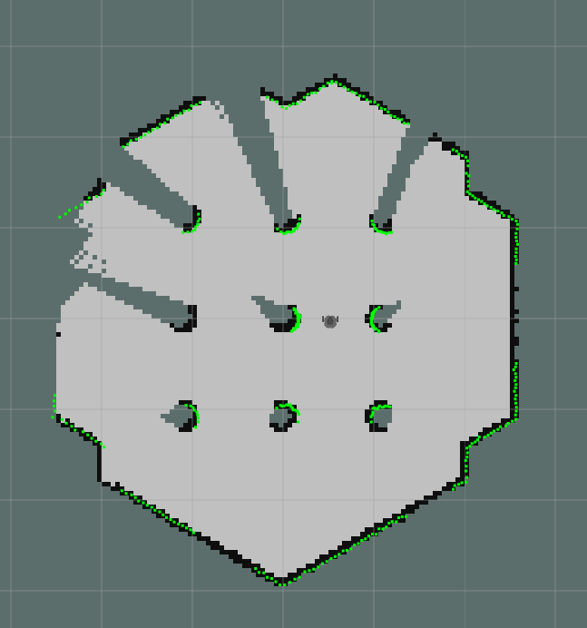
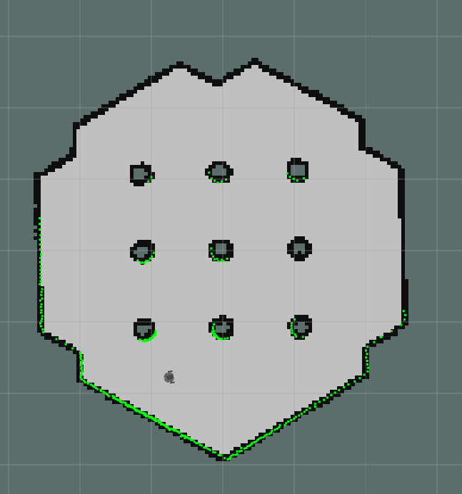
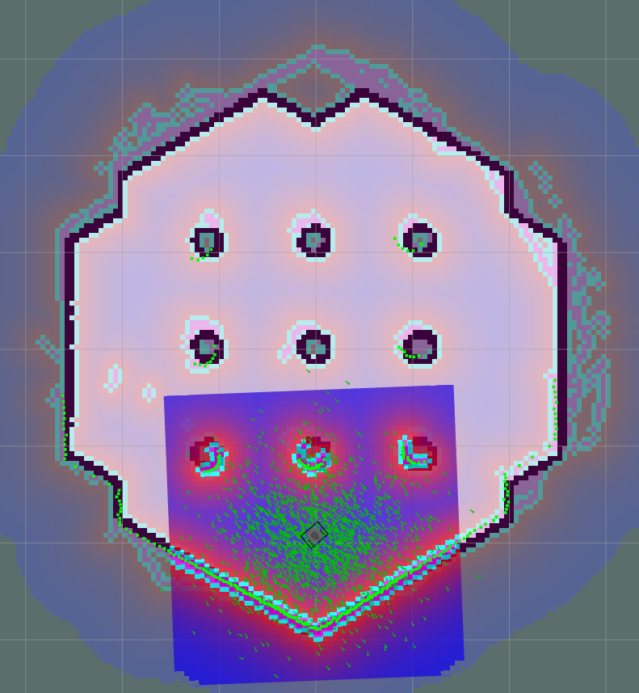
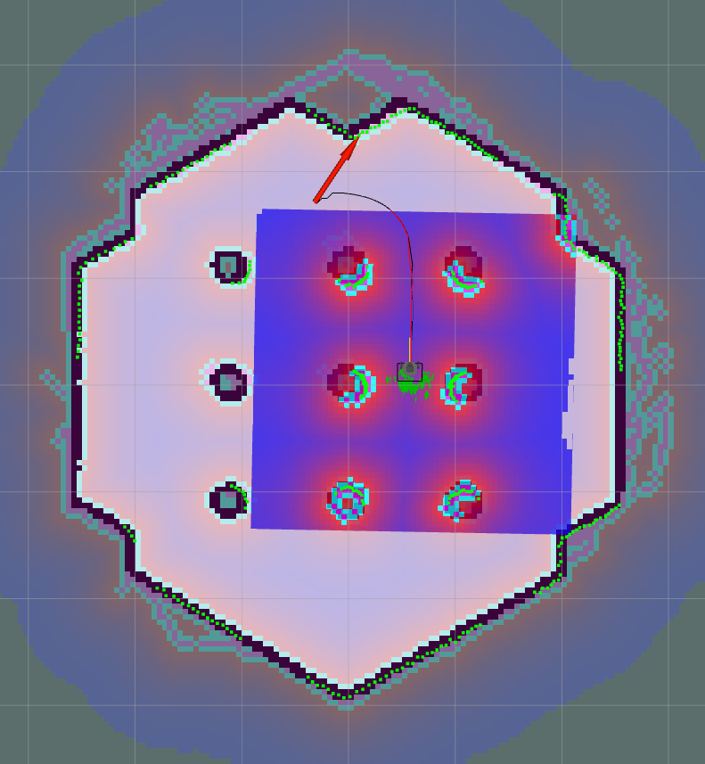

Introduction to ROS and Turtlebot3
Julien Nembrini
October 2, 2025
Human-IST, ProtoFab, LearningLab, UniFR
ProtoFab Assignment 3: Introduction to SLAM and navigation with the Turtlebot3
Introduction
This practical work focuses on learning the basic concepts of SLAM, navigation and planning through a series of small tasks involving ROS. Simlar to Assignment 2, each task consists of applying hands-on commands in the terminal to illustrate how ROS and Turtlebot3 work. You will be asked to code on Task 3 and 4.
In this practical work, you will perform the following tasks:
Task 1 – Test SLAM mapping in simulation
Task 2 – Test robot navigation in simulation
Task 3 – Send a goal to the robot through a topic
Task 4 – Create a controller able to navigate from one goal to another (code on your own).
Task 5 – [Optional] Create a map of the Project Space with the real robot and navigate into it
Learning objectives:
At the end of the assignment, you should be able to
Understand the practical implications of classical mobile robotics algorithms
Understand the use of callbacks to monitor the robot state
Use high-level topics to steer the robot
Have a base code canvas to develop your project
Pre-requisites
A working installation of ROS (ubuntu 20.04 + ROS noetic) (see AN01)
Basic understanding and hands-on experience of ROS workings and concepts (see AN02)
Hints
When you switch between simulation and real robot do not forget to change your ‘~/.bashrc’ file AND to source it!
Make sure your map is complete. An uncomplete map can lead to problems by path planning.
Tasks
Task 1 – Test SLAM mapping in simulation
This task is inspired from this page (switch to the Noetic tab) and will be conducted in simulation.
Switch to simulation and start a roscore
If you have run the real robot previously, open a terminal and edit your '~/.bashrc' file to comment/uncomment the ROS_MASTER_URI and ROS_HOSTNAME variables to point to localhost (see AN02).
Do not forget to source it afterwards to make the change take effect!
Start roscore.
Start the gazebo simulation.
Open a new terminal and start the gazebo simulation with the simple world
Start the SLAM service
Open a new terminal and start the SLAM algorithm using GMapping.
This should open rviz with the start of a map based on current LIDAR readings.
Explore the environment to build the map.
Open a new terminal and start the teleoperation (see AN02)
Explore the environment using the keys. Observe how the map is created as more information is available from the LIDAR and the robot odometry.
Make sure your map is complete, e.g. that all sides of the world’s obstacles have been mapped, before saving it.


Task 2 – Test robot navigation in simulation
This task is inspired from this page (switch to the Noetic tab).
Navigation is the class of algorithm used to bring a robot from the estimate of its current location to a point on the map. It will use the map information to plan a path that avoids known obstacles. During its movement, the robot will constantly update its location using AMCL (Adaptive Monte Carlo Localization) which uses multiple estimates of its position. We will first show the convergence to the correct position from an initial random estimate, and secondly test interactively the ros navigation algorithm.
Start roscore and gazebo
- If you haven’t stopped roscore and the gazebo simulation from Task 1 you can continue. Otherwise restart both of them following points 1 and 2 from Task 1.
- Make sure the SLAM service is stopped
Start the navigation service
Open a new terminal and start the navigation services.
The navigation service uses AMCL to locate the robot. It is a probabilistic model composed of multiple particles that each represent a possible position. The robot’s estimated position is then the average of these positions. To locate itself accurately, the robot can either update its position from an initial random situation or refine an initial estimate. To illustrate the iterative position refinement through the particles we will first randomly spread them over the map.
Open a new terminal and tell the AMCL localization to spread the particles randomly over the map
Restart the teleoperation, move the robot around and observe how the particles tend to converge to the real position of the robot. Note the difficulty yielded by symmetries of the simulated world.
When you start the navigation service, the RViz interface has a button to indicate a initial 2D pose estimate.
- Select the “2D pose estimation” button and then click on the map to indicate where the robot is and its orientation. Note how the particles spread around the robot to account for a possible imprecision in the estimation.

2D pose estimation Restart the teleoperation, move the robot around and observe again how the particles converge to the real position of the robot. Note that the initial estimate does not always circumvent the symmetry problem.
Now that the robot is located on the map, it can use the map information to navigate to another location.
- Select the “2D nav goal” button and then click on the map to indicate where the robot should go to and its final orientation. The robot then plans its path and start moving towards the goal. Check the “local map” box (if not already) to observe the local planner path and cost map.

2D navigation goal IMPORTANT: the robot will not react to a navigation goal order if it does not consider itself sufficiently located, or if the goal is not reachable.
If you see light gray traces on your map. There might be a problem with the costmap (used by the gloabl planner). Here is the command to reset the costmap
Select a new goal before the robot reaches the current goal, and observe that it triggers replanning and movement of the robot towards the newly defined goal without first reaching the current goal.
In the remaining of the semester, you do not need to reset the position estimate. Just use the “2D pose estimation” button, move the robot around a little to let it locate itself. You will then be able to send goals.
Task 3 – Send a goal to the robot through a topic
In this task we will use the RQt interface and the topic “/move_base_simple/goal” to send a goal to our robot.
Start roscore, gazebo, the navigation as in Task 2 and make sure the robot is well located on the map
Start rqt in a new terminal to monitor the topics
```default [localpc-terminal] rqt ```Understand the pose estimation topic “/acml_pose”
Open the topics monitor (Plugins \rightarrow Topics \rightarrow Topics Monitor)
Expand the “/acml_pose” topic. The message type is a “geometry_msgs/PoseWithCovarianceStamped” and its structure is as follows
- header
- frame_id
- seq
- stamp
- pose
- covariance
- pose
- orientation
- position
- header
The header contains a frame ID, a sequence number and a time stamp.
The covariance is a 6x6 matrix which represents the uncertainty about the position estimate with the columns/rows in order (x, y, z, rotation about X axis, rotation about Y axis, rotation about Z axis). If your robot is well localized, the elements in this matrix should be small.
Position is a (x,y,z) vector, while orientation is a quaternion (x,y,z,w), which represents an orientation in space. Have a look at the ROS documentation on quaternions. The important information is that this quaternion is normalized (e.g. its norme is equal to 1)
Note the “/particlecloud” topic with 500 poses
Send a goal to the robot
Open the Message Publisher ((Plugins \rightarrow Topics \rightarrow Message Publisher)), select the topic “/move_base_simple/goal”, keep other fields as they are defined and press the + button.
Expand the topic. The message type is a “geometry_msgs/PoseStamped” and its structure is as follows
- header
- frame_id
- seq
- stamp
- pose
- pose
- orientation
- position
- pose
- header
The only difference is that there is no covariance matrix because there is no uncertainty in the goal definition.
Expand the position field and set the goal position to (-2,0,0). Expand the orientation field and set the goal orientation to north (0,0,0,1).
IMPORTANT: expand the “frame_id” field and set it to “map”, otherwise your goal message will be ignored by the robot (one way to find this information is by monitoring the topic when manually assigning a goal as in Task 2).
Check the “/move_base_simple/goal” box for more than a second (because of 1 Hz frequency). Switch to rviz and observe the robot navigate to the goal, Switch to the terminal running the navigation to see the trace generated.
Test with other goal positions and orientations
Test with goal positions (0,0,0) and (2,0,0) and observe the robot reactions.
Test with goal orientations (0,0,1,0), (0,0,1,1), (0, 0, 0.7071068, 0.7071068) and observe the robot reactions.
Here is a simple converter from Euler angles or axis-angle to quaternion.
Task 4 – Create a controller able to navigate from one goal to another
In this task, we will replace the RQt interface with a python script, which will additionally monitor whether the robot has reached the currently assigned goal to assign another and make the robot go back and forth between two goals.
Make sure you have roscore, gazebo simulation and the navigation running (task 2 points 1.and 2.)
Create the goal python controller and run it
Create the file ``goal_controller.py’’ and open it in an editor (here VS code)
Use the partial source code below for your script (you can copy-paste). First have a look at the code to understand its structure.
Look at the gotogoal(), function, the handle_robot_logic() callback function and its timer. It waits 2 seconds and sends a goal command on the “/move_base_simple/goal” topic.
# callback that handles the main robot logic every 0.1 second self.timer = rospy.Timer(rospy.Duration(0.1), self.handle_robot_logic) ... def gotogoal(self,goal): self.goal_status = -1 # reset goal status self.goal = goal self.goal.header.stamp = rospy.Time.now() self.goal_pub.publish(self.goal) rospy.loginfo("New goal is sent to the robot:") rospy.loginfo(self.goal) #This function callback handles the main robot logic every 0.1 second def handle_robot_logic(self, timer_event): # Issue a goal command after 2 seconds if self.goaltimer > 0: self.goaltimer -= 1 if self.goaltimer == 0: self.gotogoal(self.goal1)Modify you CMakeLists.txt file by adding the line in the INSTALL directive (~line 170) of the file.
Build your workspace
Run the ccontroller
The robot should get to the (2,0,0) goal
Monitor the goal status and if the goal 1 is reached, switch to goal 2 (TODO 1). Hint: use a timer to wait a few seconds before issuing the goal command.
Monitor the current robot position and compute the euclidean distance to the goal. If reached a distance below 50cm switch to the other goal (TODO 2)
#!/usr/bin/env python3 import rospy from geometry_msgs.msg import PoseStamped, PoseWithCovarianceStamped, Twist, Point from move_base_msgs.msg import MoveBaseActionResult ## ## Exercise ## You need to fill the TODO parts to implement your logic ## class GoalNavigation: def __init__(self): rospy.init_node('goal_controller', anonymous=True) rospy.loginfo("Goal controller has started") # Do some cleanup on shutdown rospy.on_shutdown(self.clean_shutdown) # Publisher to goal commands self.goal_pub = rospy.Publisher('/move_base_simple/goal', PoseStamped, queue_size=10) # Subscriber to goal result information (receives once a message when the robot arrived to its destination goal) self.result_sub = rospy.Subscriber('/move_base/result', MoveBaseActionResult, self.result_callback) # Subscriber to current position information self.position_sub = rospy.Subscriber('/amcl_pose', PoseWithCovarianceStamped, self.position_callback) # Initialize Pose message for goal commands # This message will be used to send position (x,y,z) and orientation (quaternion) to the robot self.goal = PoseStamped() # pre-define the two goals self.goal1 = PoseStamped() self.goal1.header.frame_id = 'map' self.goal1.pose.position.x = 2.0 self.goal1.pose.orientation.z = 1.0 self.goal2 = PoseStamped() self.goal2.header.frame_id = 'map' self.goal2.pose.position.x = -2.0 self.goal2.pose.orientation.z = 1.0 self.goal_status = -1 self.euclidean_distance = -1 # flag to send once initial goal self.goaltimer = 20 # Publisher to send velocity commands # used to stop the robot self.cmd_vel_pub = rospy.Publisher('/cmd_vel', Twist, queue_size=10) self.twist = Twist() # callback that handles the main robot logic every 0.1 second self.timer = rospy.Timer(rospy.Duration(0.1), self.handle_robot_logic) # Main loop rate self.rate = rospy.Rate(10) # 10 Hz # Callback function to process goal result data def result_callback(self, msg): #rospy.loginfo("Goal result %s", msg.status.status) self.goal_status = msg.status.status if self.goal_status == 3: rospy.loginfo("Goal reached successfully") elif self.goal_status == 4: rospy.loginfo("Goal was aborted by the action server") elif self.goal_status == 5: rospy.loginfo("Goal has been rejected by the action server") elif self.goal_status == 2: rospy.loginfo("Goal is being processed") elif self.goal_status == 1: rospy.loginfo("Goal received, but not yet processed") elif self.goal_status == 0: rospy.loginfo("Goal status is pending") # Callback function to process robot position data # This function will be called whenever a new amcl_pose message is received def position_callback(self, msg): rospy.loginfo(msg.pose.pose) # TODO 2 Calculate the euclidean distance to the goal # and use this information to switch goal whenever you are within 50cm of the goal # Hint: you can use the self.goal variable to access the current goal position rospy.loginfo("distance to goal %f",self.euclidean_distance) def gotogoal(self,goal): self.goal_status = -1 # reset goal status self.goal = goal self.goal.header.stamp = rospy.Time.now() self.goal_pub.publish(self.goal) rospy.loginfo("New goal is sent to the robot:") rospy.loginfo(self.goal) #This function callback handles the main robot logic every 0.1 second def handle_robot_logic(self, timer_event): # Issue a goal command after 2 seconds if self.goaltimer > 0: self.goaltimer -= 1 if self.goaltimer == 0: self.gotogoal(self.goal1) # TODO 1 Check if the robot has reached its goal and is ready to issue a new goal # Hint: use a timer to wait a few seconds before sending the command # Main loop. spin is blocking and only allows to processes callbacks def run(self): while not rospy.is_shutdown(): rospy.spin() def clean_shutdown(self): rospy.loginfo("Goal controller is shutting down.") self.twist = Twist() # Send motion commands to motors self.cmd_vel_pub.publish(self.twist) rospy.loginfo("Robot stopped.") if __name__ == '__main__': try: controller = GoalNavigation() controller.run() except rospy.ROSInterruptException: pass
Some more details about portions of the code above:
Shebang (line 1,
#!/usr/bin/env python3): every Python ROS node will have this declaration at the top. This first line makes sure your script is executed as a Python script.Imports (lines 2-4): imports the necessary topic messages
Main GoalNavigation class :
def init(self): define potential variables, initialize ros node and connect to topics (pub and sub) using callbacks.
Note the self.timer which defines a callback function which will be called every 100ms (see below).
def result_callback(self, msg): returns a result regarding the current goal command.
def position_callback(self, msg): returns an estimate of the current robot position.
def gotogoal(self,goal): sends a goal command on the “/move_base_simple/goal” topic.
def handle_robot_logic(self, timer_event): is called every 100ms and can be used to implement a finite state machine.
Task 5 [Optional] Create a map of the Project Space with the real robot and navigate into it
Change the ROS_MASTER and ROS_HOSTNAME in your .bashrc to point on your ip address ```default
# Settings to use the real robot (use your own) export ROS_MASTER_URI=http://192.168.1.2:11311 export ROS_HOSTNAME=192.168.1.2 # Settings to use the turtlebot3 in simulation (uncomment the two lines below) #export ROS_MASTER_URI=http://127.0.0.1:11311 #export ROS_HOSTNAME=127.0.0.1 ```
Source your .bashrc on all open terminals.
Turn on the robot. Make sure you are on the right wifi.
Ssh into the robot (the IP must be the one of your turtlebot3). Turtlebot3 OS - user: ubuntu, password: turtlebot.
Update the robot bashrc (edit the file using nano editor). Update ROS_MASTER_URI variable in the .bashrc file with the value of your localpc-ip. Save, exit nano and then source your file.
Start roscore on your local machine (open a new terminal if necessary)
Start turtlebot3_robot node on the robot. This establishes the connection between the robot and ROS and brings up all necessary drivers.
Start the SLAM service
Open a new terminal and start the SLAM algorithm using GMapping.
This should open rviz with the start of a map based on current LIDAR readings.
Start teleop on your local machine (open a new terminal if necessary)
Explore the environment to build the map. Do not go move or turn too fast.